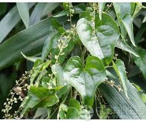
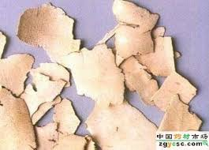

Tên khác:
Bì giải, Củ Kim cang, Bạt kế..
Tên khoa học: Dioscorea tokoro Mahino
Tên Hán việt: 萆解 - tỳ giải
Họ Củ Nâu (Dioscoreaceae)
Cây Tỳ giải:
( Mô tả, hình ảnh, thu hái, chế biến, thành phần hoá học, tác dụng dược lý ....)

Mô tả:Tỳ giải là một loại cây leo, sống lâu, có rễ phình thành củ to, mặt ngoài màu vàng nâu, trong có màu trắng vàng, chất cứng, vị đắng. Thân nhỏ, gầy. Lá mọc so le, hình trái tim, cuống lá dài, đầu nhọn, có 7 đến 9 hoặc 11 gân lớn. Lá kèm biến thành tua cuốn. Hoa đơn tính, khác gốc, màu xanh nhạt, mọc thành bông. Quả nhỏ, có dìa như cánh. Ra hoa vào mùa hạ và thu.
Bộ phận dùng:
thân rễ (vẫn gọi là củ). Củ to, vỏ trắng ngà, ruột trắng có nhiều chất bột, không mốc mọt, không vụn nát là tốt.
Phân bố, thu hái và chế biến:
Hiện nay chưa thấy ở Việt Nam, tuy nhiên ta vẫn khai thác với tên tỳ giải một số cây thuộc họ Hành (Alliaceae) và họ Củ nâu (Dioscoreaceae) nhưng chưa xác định tên khoa học chắc chắn. Tỳ giải ta khai thác được dùng trong nước và xuất khẩu. Cây Dioscorea tokoro mọc ở các tỉnh Quảng Đông, Quảng Tây, Vân Nam V. V... là những tỉnh Trung Quốc giáp giới miển Bắc nước ta.
Tỳ giải khai thác quanh năm, nhưng tốt nhất vào mùa thu đông.
Cách bào chế:

Đào củ về, rửa sạch đất, phơi khô có khi thái thành từng miếng mỏng rồi mới phơi cho chóng khô.
Theo Trung Y: Bỏ hết rễ con, rửa sạch đất cát, thái lát, phơi khô, dùng sống.
Theo kinh nghiệm Việt Nam: Ngâm nước vo gạo một đêm, rửa sạch bằng bàn chải, ủ mềm đều, bào hay thái mỏng, phơi khô (thường dùng).
Thành phần hoá học:
có Saponosid (Dioxin và Dioscorea sapotoxin).
Vị thuốc Tỳ giải:
( Công dụng, Tính vị, quy kinh, liều dùng .... )
Tính vị:
vị đắng, tính bình.
Quy kinh:
Vào kinh Can và Vị.
Tác dụng:

Trừ thấp nhiệt, Trị phong thấp, giải độc, lợi tiểuLiều dùng: 12-40g
Kiêng ky:
âm hư hoả thịnh, Thận hư không nên dùng.
Ứng dụng lâm sàng của Tỳ giải:
trị ung nhọt do thấp nhiệt:
dùng bài: Tỳ giải thàm thấp thang (Dương khoa tâm đắc- cao thuỵ quân)
Vị thuốc: Đơn bì Hoàng bá Hoạt thạch Thông thảo Trạch tả Tỳ giải Xích linh Ý dĩ nhân Sắc uống.
Chủ trị: trị bạch trọc, lưng cốt tê đau, viêm bàng quang, tiểu đục, tiểu buốt
Dùng bài Tỳ giải phân thanh ẩm:
Vị thuốc: Bạch truật .4g, Đơn sâm ...6g, Hoàng bá ..2g, Liên nhục 2,8g, Phục linh .. 4g, Thạch xương bồ 2g, Tỳ giải . 8g, Xa tiền tử .. 6g
Trị tiểu nhiều, tiểu không tự chủ:
bài thuốc: Tỳ giải hoàn (Phổ tế phương)
vị thuốc: Ba kích, Bạch Phục linh, Đỗ trọng, Hoàng kỳ, Ích trí, nhân Kim mao cẩu tích, Lộc nhung, Nhục thung dung, Thỏ ty tử, Tỳ giải
Tán bột. Trộn với rượu hồ làm hoàn, to bằng hạt Ngô đồng lớn. Mỗi lần uống 30 viên với rượu ấm.
Trị phong trúng vào kinh thận, đau thần kinh toạ
Bài thuốc: Tỳ giải tán (kỳ hiệu lương phương)
Bạch linh, Cẩu tích , Đỗ trọng , Hà thủ ô, Thiên hùng, trạch tả, Tỳ giải
Tán bột. Ngày uống 8g, với nước cơm.
Trị giang mai, nhọt độc, khớp xương đau, đầu căng như muốn vỡ
Bài thuốc: Tỳ giải thang (Ngoại khoa chính tông -Trần thực công)
Trị tinh hoàn sưng to:
Bài thuốc: Giải Độc tả tỳ thang (Ngoại Khoa Chính Tông, Q.4. Trần Thực Công)
Tham khảo
Tỳ giải lợi tiểu trừ mụn nhọt
SKĐS - Tỳ giải là rễ phình thành củ của cây tỳ giải (Dioscorea tokogo Makino.) hay một số loài Dioscorea khác thuộc họ Củ nâu (Dioscoreaceae).Tỳ giải là rễ phình thành củ của cây tỳ giải (Dioscorea tokogo Makino.) hay một số loài Dioscorea khác thuộc họ Củ nâu (Dioscoreaceae). Loại cây leo, sống lâu năm, thân nhỏ gầy. Lá mọc so le, hình trái tim, cuống lá dài, có nhiều gân nổi rõ. Lá kèm biến thành tua cuốn. Rễ phình thành củ, mặt ngoài màu vàng nâu, trong màu trắng vàng, chất cứng, vị đắng. Hoa đơn tính khác gốc, mọc thành bông. Quả nhỏ có dìa như cánh.
Tỳ giải chứa saponin (dioxin và dioscorea saponoxin…) - là những nguyên liệu trung gian điều chế hormon và cortisol. Theo Đông y, tỳ giải vị đắng, tính bình; vào kinh can và vị. Có tác dụng khứ phong thấp, phân thanh khứ trọc. Dùng làm thuốc lợi tiểu chữa bạch trọc; chữa lưng gối tê đau; mụn nhọt… Liều dùng và cách dùng: 4 - 20g. Xin giới thiệu một số bài thuốc trị bệnh có tỳ giải:
Lợi niệu thông lâm
Bài 1: Chè thuốc tỳ giải: tỳ giải 16g, ích trí nhân 12g, thạch xương bồ 12g, ô dược 12g, cam thảo cành 8g. Sắc uống. Ôn thận lợi thấp. Trị tiểu đục, tiểu dắt do thấp nhiệt.
Bài 2: Chè thuốc trình thị tỳ giải: tỳ giải 8g, hoàng bá 2g, phục linh 4g, đan sâm 6g, tâm sen 3g, thạch xương bồ 2g, bạch truật 4g, xa tiền tử 6g. Sắc uống. Trị tiểu nhỏ giọt do thấp nhiệt.
Cây tỳ giải.
Bài 3: tỳ giải 12g, kim tiền thảo 16g, ý dĩ 16g, ngưu tất 12g, ô dược 12g. Sắc uống nhiều ngày. Trị tiểu đục, sỏi tiết niệu.
Bài 4: tỳ giải 12g, sinh địa 20g, hoài sơn 16g, hoàng bá 12g, đan bì 12g, sơn thù 12g, phục linh 12g, trạch tả 12g, ngưu tất 12g. Sắc uống. Chữa viêm đường tiết niệu, tiểu buốt, tiểu rắt.
Trừ thấp, giảm đau
Bài 1: Hoàn tỳ giải: tỳ giải 12g, ngưu tất 12g, bạch truật 12g, đan sâm 16g, phụ tử 8g, chỉ xác 8g. Các vị nghiền thành bột mịn, luyện với mật làm hoàn. Mỗi lần uống 12g, uống với rượu nóng. Trị tê thấp, mình mẩy và chân tay đau nhức không đi lại được.
Bài 2: tỳ giải 12g, ý dĩ 16g, ngưu tất 12g, hà thủ ô 12g, mộc qua 12g, đỗ trọng 12g, đương quy 12g, đan sâm 12g, cam thảo 4g. Sắc uống. Trị thấp nhiệt làm hai chân nhức mỏi, đi lại khó khăn.
Chữa mụn nhọt, lở ngứa: tỳ giải 20g, bạch tiên bì 12g, kim ngân 16g, thổ phục linh 32g, thương nhĩ tử 16g, uy linh tiên 12g, cam thảo 6g. Sắc uống. Chữa mụn nhọt, ngứa lở ngoài da, chảy nước vàng do thấp nhiệt.
Kiêng kỵ: Người âm hư hoả vượng, thận hư sinh ra đau lưng cấm uống.
theo: suckhoedoisong.vn
Nơi mua bán vị thuốc Tỳ giải đạt chất lượng ở đâu?
Trước thực trạng thuốc đông dược kém chất lượng, nguồn gốc không rõ ràng,... xuất hiện tràn lan trên thị trường, làm ảnh hưởng tới hiệu quả điều trị cũng như ảnh hưởng tới sức khỏe của bệnh nhân. Việc lựa chọn những địa chỉ uy tín để mua thuốc đông dược là rất quan trọng và cần thiết. Vậy khách hàng có thể mua vị thuốc Tỳ giải ở đâu?
Tỳ giải là vị thuốc nam quý, được sử dụng rộng rãi trong YHCT. Hiện tại hầu hết các cửa hàng thuốc đông dược, phòng khám đông y, phòng chẩn trị YHCT... đều có bán vị thuốc này. Tuy nhiên người mua nên chọn những địa chỉ có uy tín, đảm bảo chất lượng, có giấy phép hoạt động để mua được vị thuốc đạt chất lượng.
Với mong muốn bệnh nhân được sử dụng những loại dược liệu đúng, chất lượng tốt, phòng khám Đông y Nguyễn Hữu Toàn không chỉ là đia chỉ khám chữa bệnh tin cậy, uy tín chất lượng mà còn cung cấp cho khách hàng những vị thuốc đông y (thuốc nam, thuốc bắc) đúng, chuẩn, đạt chuẩn chất lượng. Các vị thuốc có trong tiêu chuẩn Dược điển Việt Nam đều được nghành y tế kiểm nghiệm đạt chất lượng tiêu chuẩn.
Vị thuốc Tỳ giải được bán tại Phòng khám là thuốc đã được bào chế theo Tiêu chuẩn NHT.
Giá bán vị thuốc Tỳ giải tại Phòng khám Đông y Nguyễn Hữu Toàn: 140.000vnd/1kg
Tùy theo thời điểm giá bán có thể thay đổi.
+ Khách hàng có thể mua trực tiếp tại địa chỉ phòng khám: Cơ sở 1: Số 481 lô 22 Lê Hồng Phong, Phường Gia Viên, Thành phố Hải Phòng
+ Mua trực tuyến: Thuốc được chuyển qua đường bưu điện. Khi nhận được thuốc khách hàng thanh toán tiền COD.
Tag: cay Ty giai, vi thuoc Ty giai, cong dung Ty giai, Hinh anh cay Ty giai, Tac dung Ty giai, Thuoc nam
Thaythuoccuaban.com Tổng hợp
*************************